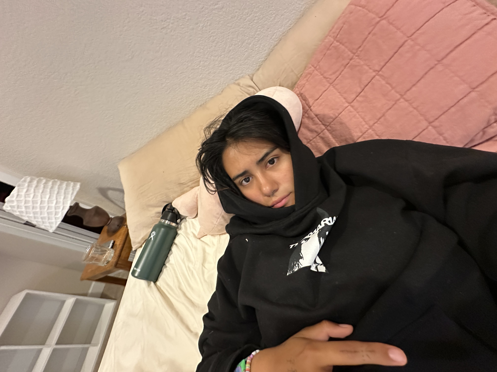
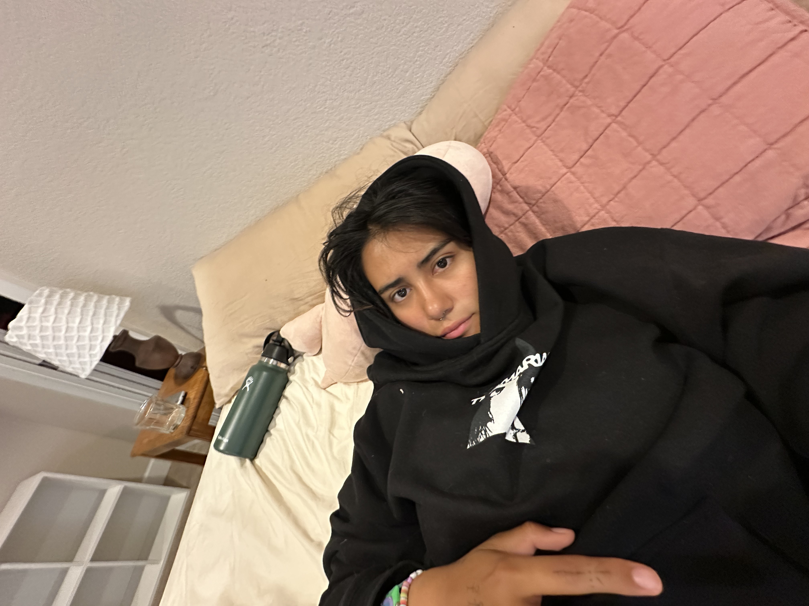

Hello. My name is Juliana. My favoirtie color has changed withing the past few years from blue to green.


Hello. My name is Juliana. My favoirtie color has changed withing the past few years from blue to green.

I am a senior about to graduate in computer science with a minor in crative technology and design. I am very nervous and overwhelmed about graduating because I dont feel prepared nor experienced enough for a job in either of these feilds. Sometimes I feel like I dont know anything about eoither these fields. But I am going to try my best this year to gain enough experience to feel qualifed, prepared and ready to launch myself into the "professinal world".
I am currently hyper fixed on living abroad in many diffrent cities like barcelona spain and some where in latin america near a beach.
I love plants
I doing things with my friends
I like mini things, trinkets, stiffed animals, bags with pockets, and bag charms.
I like jewlwery and I like belts and thrifting
I want to work hard this year and build many porjects to feel confident and compitent in the computer science field and cretive fields.
I also want to graduate with either a tech or creative job/ internship.
I also want to retire my parents to Mexico within the next 7 years.
email me !
juga2381@colorado.edu